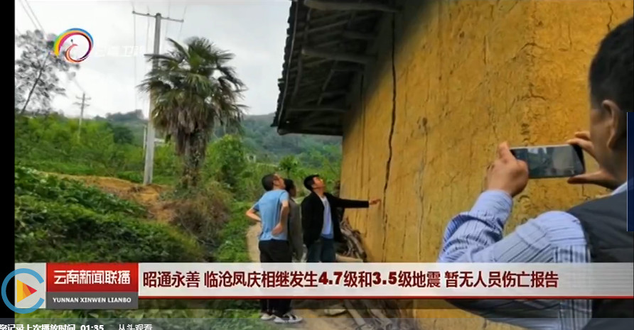

透过"热闹"看"门道" | 0516昭通4.7级地震分析与讨论
前言
俗话说：“外行看热闹，内行看门道”。昨天凌晨在云南昭通市永善县发生了4.7级地震（详见：RED-ACT: 云南省昭通市永善县4.7级地震破坏力分析）。虽然这次地震的震级不大，但是这次地震应急分析中的“门道”倒确实颇有值得一提之处。
首先回顾一下这次地震应急的历程，并感谢中国地震台网中心为本研究提供数据支持。0516昭通地震发生在凌晨4时33分。我一看震级只有4.7级，基于传统上“破坏性地震一般大于5级”的经验，就没有辛苦研究生们起床动手分析，直到早上8点多，估计大家都开始到岗上班了，才开始干活。结果拿到地震数据后发现居然加速度超过10cm/s2的地震动多达20余条，这大大出乎我们的意料。当然，这一方面充分体现出我国强震台网建设的最新成果，目前在川滇交界局部，我国的强震台网密度已经超过了令我们此前羡慕很久的，号称世界最密集的日本台网的密度。相信随着台网建设水平的提高，未来必将实现覆盖全国的密集强震台网，为地震工程和震后应急提供重大支持。当然，伴随着建设的过程，也必然会存在各种“成长的烦恼”，比如一些台站的数据格式和传统格式不一致等等。这个问题导致这次应急耽误了一些时间。但无论如何，密集的台站给我们揭开了地震很多有意思的秘密。
一、震级 vs 强震记录
这次地震的震级虽然只有4.7级，尚未达到经验里“破坏性地震一般大于5级”的标准，但是实际上还是造成了一定的破坏（图1）。
1

2

3

4

5

6

图1 灾区实际震害(CCTV-13新闻频道, 2019; 新京报网, 2019)
（1）落石（2）土木结构破坏1（3）土木结构破坏2（4）土木结构破坏3（5）土木结构破坏4（6）土木结构破坏5
而强震观测利用仪器来观测地震时强地面运动记录，能为震害的分析与评估提供定量的数据。由于地震记录是一个随着时间不断变化结果，所以，目前大多采用地震记录的峰值来表征一个地震的强弱。比如，现在地震记录中最常用的峰值就是峰值加速度PGA或者峰值速度PGV。我国也给出了根据峰值数据确定仪器烈度的方法：
首先根据式(1)、(2)将三个方向的地震动进行合成得到合成地震动的PGA和PGV，接着根据式(3)、(4)和(5)推算得到仪器烈度I、IPGA和IPGV（中国地震局监测预报司, 2015）。

按照以上方法，对本次云南地震四个典型台站记录进行了对比分析，台站PGA及仪器烈度如表1所示。四个台站地震动反应谱对比如图2-5所示。本次地震W3006、C2510和W3709等台站的仪器烈度达到六度，说明本次地震会对这些台站周边建筑造成一定的破坏。因此，相较于根据震级的地震破坏力的判定方法，仪器烈度能够较好地反映本次地震的破坏力，为应急救援提供参考。
表1 典型台站信息


图2 W3605台站记录反应谱

图3 W3006台站记录反应谱

图4 C2510台站记录反应谱

图5 W3709台站记录反应谱
所以，通过震级大小来估计地震损失，其准确性有较大的不确定性。在具备了密集台网监测条件的今天，其局限性已经越来越明显。随着传感器价格的下降和通讯技术的提升，发展基于密集强震台网的震害评估手段显然是未来的发展趋势。
二、仪器烈度 vs 抗震弹塑性分析
实测的仪器烈度虽然比通过震级来估算地面运动强度进步了不少，但是它毕竟把一个复杂的地面运动过程简化成了一个峰值。因此，在某些情况下峰值可能就不能很好的反映世界的真实情况。而弹塑性时程分析把完整的时程记录输入到对象结构中，可以更好地考虑地震动的时域、频域各特性。
基于城市抗震弹塑性分析和实测地面运动的地震破坏力速报系统给出了本次地震下典型单体建筑的响应情况，如表2所示。其中，速报所选的单体结构自振周期如表3所示。可见，3层和6层框架的层间位移角均小于《建筑抗震设计规范》GB 50011—2010规定的弹性层间位移角限值1/550，结构处于完好状态。这是因为分析所用的典型台站的地震动记录主要为短周期分量，0.4 s 以上周期分量很小，而分析所用3层和6层钢筋混凝土框架的一阶周期均大于0.4 s，故此地震动对上述框架的破坏力较弱。从框架结构响应来看，W3709台站记录作用下框架结构层间位移角大于W3006台站，而W3709台站仪器烈度小于W3006台站，这说明仪器烈度的大小并不能反映该框架结构响应的大小。
单层未设防砌体的一阶周期处于W3006、C2510和W3709台站反应谱峰值段，因此，W3006、C2510、W3709台站记录对单层未设防砌体的破坏较W3605台站严重。总体上，仪器烈度大的台站记录对该砌体结构的破坏力更大，但也存在个别情况，如W3709和C2510台站仪器烈度均为6.1，但W3709记录作用下砌体结构较C2510台站更为严重，这说明仪器烈度并不能全面地反映不同台站地震动记录对该砌体结构破坏力的大小。
表2 结构响应及破坏情况汇总

表3 速报分析所采用结构的自振周期

利用密布强震台网在震后获取的实时地震动信息，再结合城市抗震弹塑性分析，就可以得到地震发生后不同地点的建筑破坏情况。本次地震典型台站地震动作用下建筑的破坏比例如表4所示，其中中等破坏的建筑主要为土木结构，这与实际震害调查结果一致（图1）。从表4中可知，总体上仪器烈度大的台站处建筑破坏更为严重，但也存在个别异常情况（如W3006台站仪器烈度更大，但是破坏却不及W3709台站），说明仪器烈度并不能全面反映地震对区域建筑的破坏。对于同一台站，城市抗震弹塑性分析的结果不仅能给出不同破坏状态建筑的比例，还能给出考虑建筑对加速度的放大效应及人员加速度感受，分析结果较仪器烈度更为丰富。同时，仪器烈度只能考虑地震的作用，不能考虑建筑的抗震能力，而城市抗震弹塑性分析则能很好地考虑建筑的特性。
表4 不同台站破坏比例与仪器烈度对比

三、RED-ACT的地震滑坡分析
RED-ACT地震速报系统能够根据实测地震动进行地震滑坡分析，表5给出了不同台站地震滑坡临界坡度与仪器烈度对比。根据临界坡度，就可以对周边地区的滑坡风险给出较为合理的评估。进一步对比分析可知，仪器烈度大的台站临界坡度不一定小，这主要是因为地震滑坡不仅与地震动强度相关，还和地震动的完整时程相关，还与当地的地形及岩土体的力学性质相关。因此，基于密集强震台网实时记录的滑坡分析未来将可以提供更加合理的评估结果。
表5 不同台站地震滑坡临界坡度与仪器烈度对比

四、结论
我小时候，父母每天都听天气预报，但是听的是南京、合肥的天气预报。因为当时气象和通讯技术不够，只能给出南京、合肥这些省会城市的天气，进而我们自己再根据南京、合肥的天气来估计我老家芜湖的天气，往往会给出错误的天气预测结果。而现在我们不仅可以给出更细粒度的天气预报（比如给出各个城区的（比如北京海淀区）的天气预报），还可以给出更多的天气预报产品。最典型的例子就是体感温度：比如刮大风天的零度和不刮风天的零度绝对不是一样的冷。而之所以有这些进步，就是传感手段、传输手段、分析手段进步的结果。利用现代发达的密集强震传感网络，我们希望通过与相关部门共同的努力，为大家提供更好的地震应急分析产出。
最后说一句，在这个强调自主研发的时代，我们掌握着RED-ACT系统的每一行代码。

扩展阅读
参考文献
CCTV-13新闻频道. 云南昭通 永善4.7级地震 有震感和落石 暂无人员伤亡报告[EB/OL].http://tv.cctv.com/2019/05/16/VIDEmqHH0jqquWmAQTy818VL190516.shtml. Accessed on May 2019.
新京报网. 云南两连震均暂无人员伤亡报告 四川多地网友：被摇醒了[EB/OL]. http://www.bjnews.com.cn/wevideo/2019/05/16/579576.html. Accessed on May 2019.
中国地震局监测预报司. 仪器地震烈度计算暂行规程 [S]. 北京: 地震出版社，2015.
---End---

程庆乐

赵鹏举

郑哲
---End--
相关研究
长按识别二维码，关注我们的科研动态